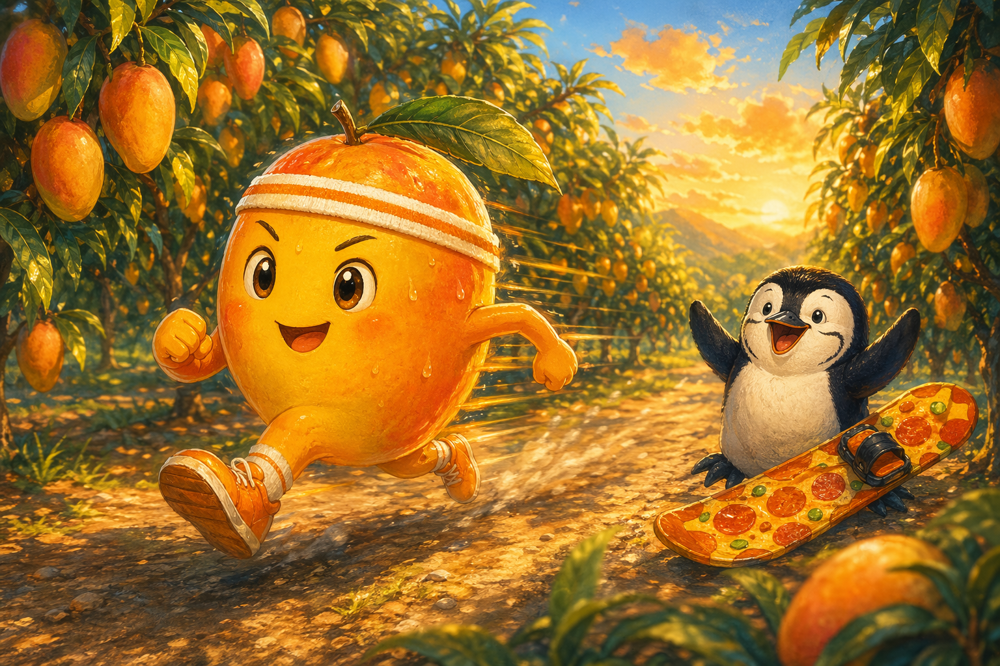
Story 08
Mango and the Sunshine Race
In the blazing orchards of Pingtung, a speedy mango learns that a short season can still be full of golden joy.
Mandarin Spotlight: 芒果 (mángguǒ) = mango
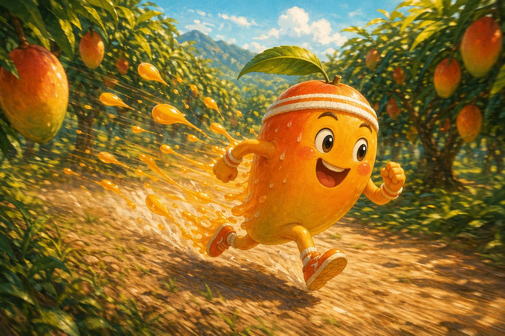
Late for Greatness
Mango was running late, and for Mango that was basically a crime against nature. "Catch me if you can. I'm in season!" he shouted.
He shot through the Pingtung orchards like a bright orange-yellow rocket, sweatband soaked and golden juice sparkling behind him.
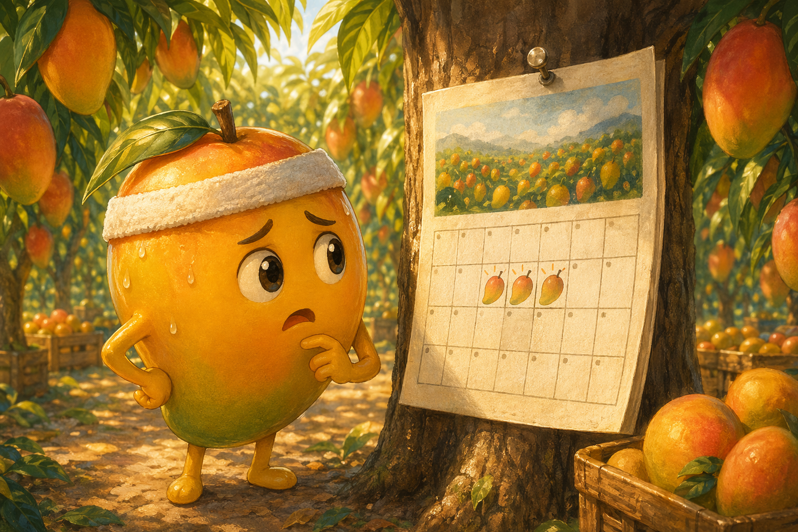
Only Three Weeks
It was peak mango season in 屏東 (Píngdōng), and Mango had only twenty-one perfect days left before his season was over.
He wanted to win the Mango Marathon, soak up every drop of sunshine, and become the greatest mango the orchard had ever seen.
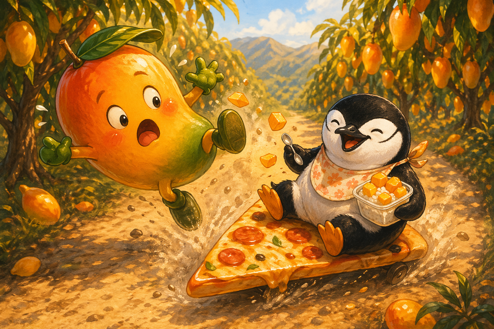
The Snack Oracle
Then Mango tripped over a chinstrap penguin sitting right in the path, cheerfully eating mango sticky rice from a container.
"I'm Barnaby Beaksworth!" said the penguin on the pizza-shaped snowboard. "There's always enough fish for one more. Also enough snacks."
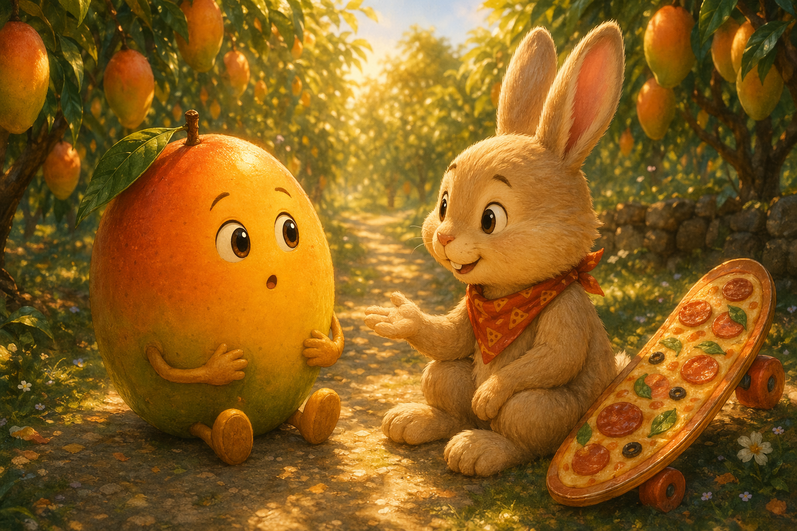
Three Glorious Weeks
Mango grumbled about only having three weeks left. Barnaby looked honestly amazed. "Three weeks of being the most delicious fruit on the island? That sounds wonderful."
Mango stopped. He had been so busy worrying about the end of the season that he had forgotten to enjoy the season itself.
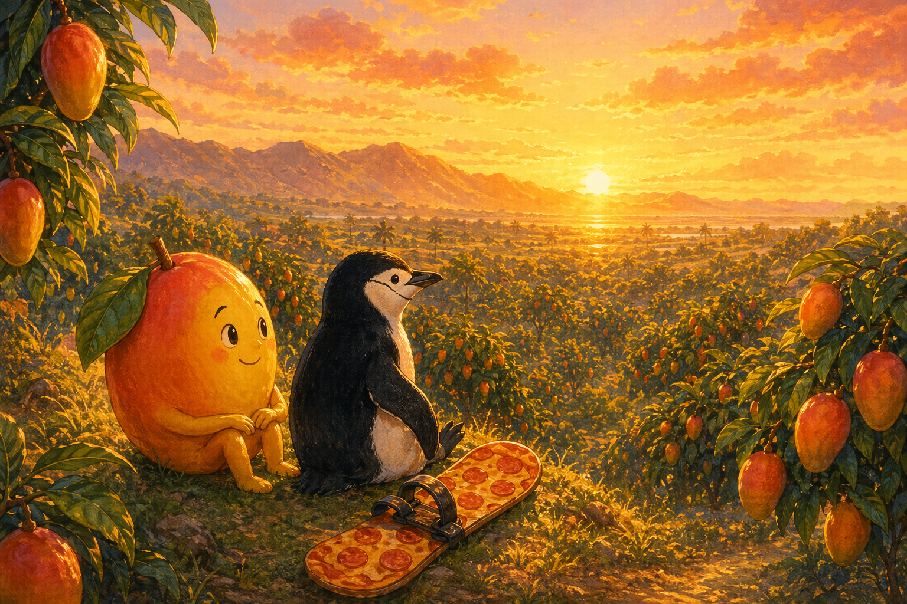
The Taste of Morning
So Mango sat beside Barnaby and watched the sunrise spill gold over the trees until the whole orchard glowed like lanterns.
"好吃," (hǎochī), Barnaby whispered, even though he was talking about the moment, not the food. Mango had to admit the view was delicious.
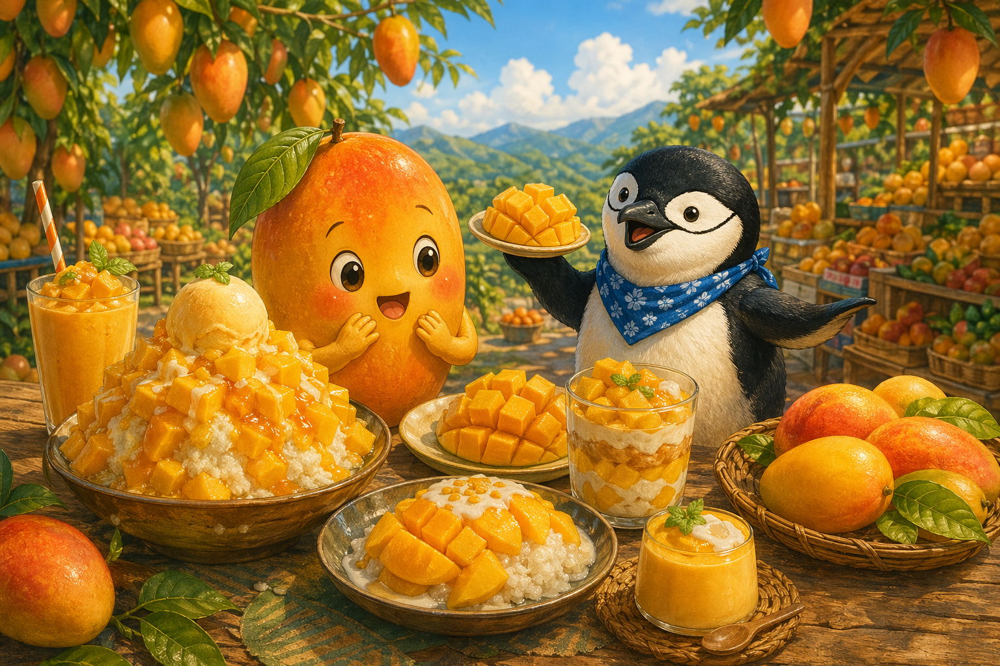
All the Mangoes
They spent the day touring Pingtung, tasting mango shaved ice, mango smoothies, dried mango, mango with chili salt, and mango sticky rice.
Every stop reminded Mango that his season was not just about winning. It was about sharing sweetness while the sunshine lasted.
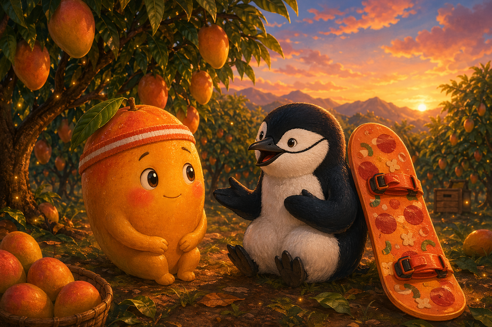
The Right Reason to Run
The night before the race, Barnaby gave Mango the kindest speech a snack oracle could give. "Be the most YOU you can be. That's what makes a great mango."
For the first time, Mango felt excited instead of frantic. He was ready to run his own race.
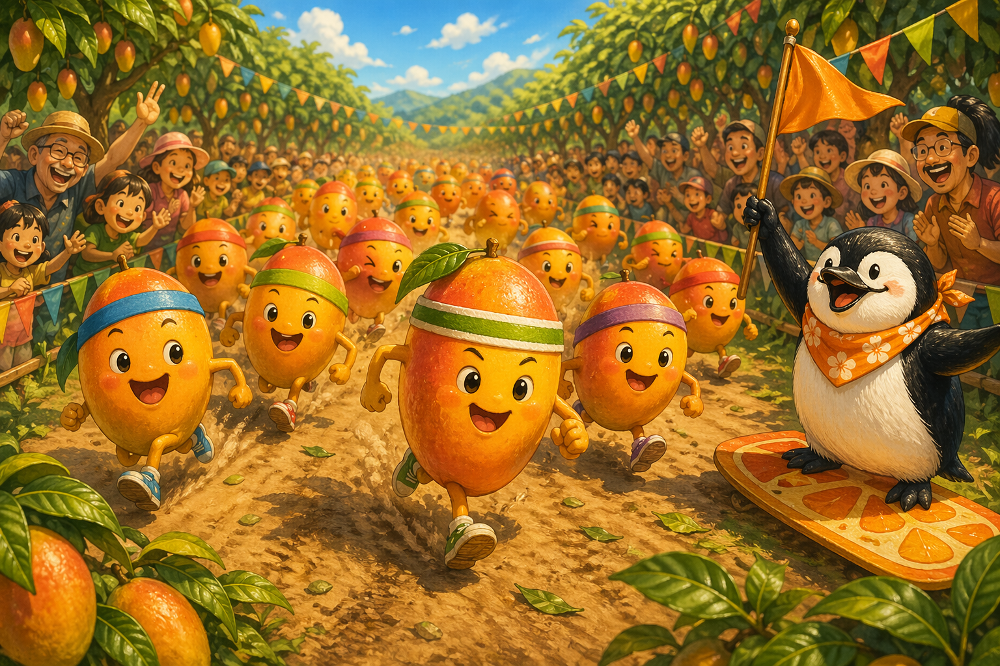
The Mango Marathon
The next morning, fifty mangoes launched across the orchard as the crowd shouted, "加油!" (jiāyóu), "Go for it!"
Mango ran with joyful, golden energy. He did not outrun time. He outran worry.
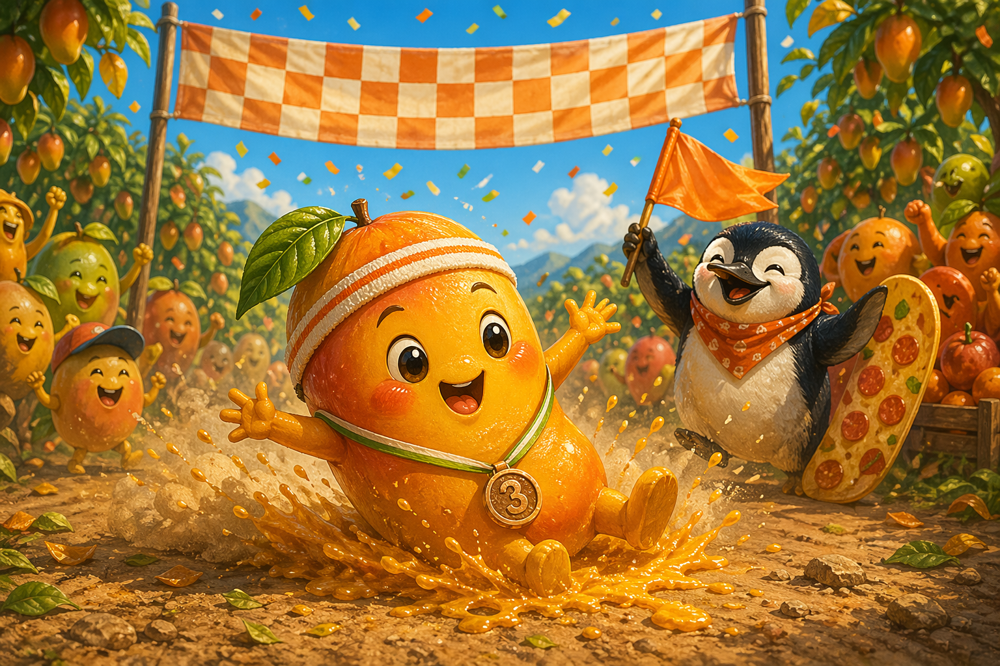
Third Place, Full Heart
Mango came in third, behind a sleek Irwin mango and a tiny surprise champion. Then he did his magnificent victory slide anyway.
The crowd roared, "太棒了!" (tài bàng le), "Awesome!" and Mango realized third place could still feel like sunshine.
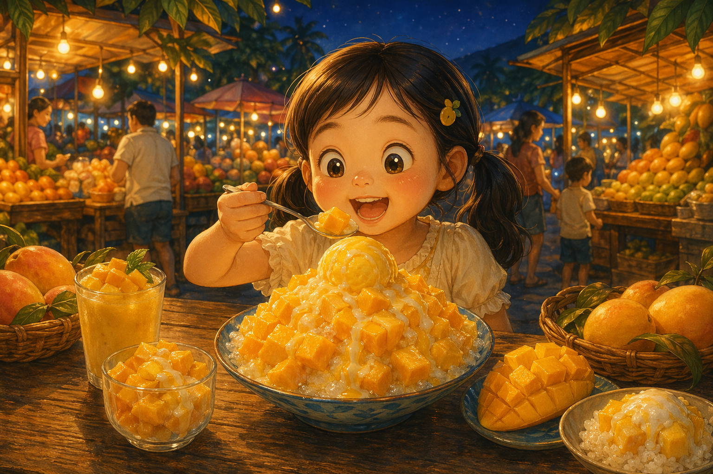
Peak Sweetness
That evening, Mango became a plate of fresh mango ice, and a little girl took one bite with huge, shining eyes.
"歐伊西!" (ōuyīxī), she squealed. Inside that happy sweetness, Mango laughed. He had lived his season well.
Goodnight, sunshine one. May you taste your season fully, run with joy, and know that you do not need first place to be extraordinary.